Create New Shipment Order
1Getting Started
To Create a New Shipment Order, click the “Shipment Orders” tab from within any Study:
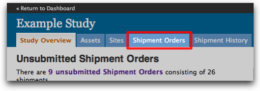
Then, click the “Create New Shipment Order” button:
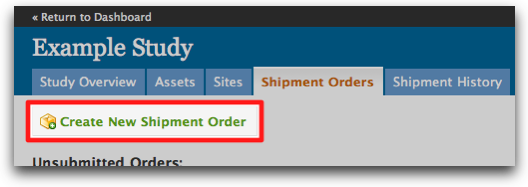
A dialog will appear asking for:
- A Name for the Order
- A Default Ship Method
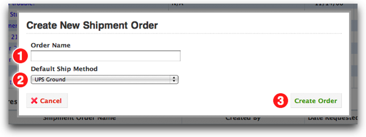
The Order Name can be anything you choose, as long as it is unique within the Study. We suggest using a descriptive phrase, for example: “Initial European Distribution” or “West Coast Replenishment”.
The Default Ship Method will apply to all Sites added to your Shipment Order. If you know that most or all of your order will need expedited shipping, you can choose an appropriate Ship Method here. You can change the Ship Method for any Site before submitting your Order.
Click the “Create Order” button to continue.
1.1The Shipment Builder
Once your Order has been created, you can begin the Shipment Builder process.
Items are added to your Shipment Order in batches, as follows:
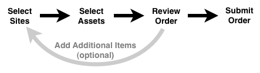
- Start by selecting a Site, or group of Sites
- Select the Assets to ship to those Sites
- Review your in-progress Order, where you can:
- Submit your Order, or
- Edit Order quantities, or
- Add additional items to your Order by repeating the steps above.
2Selecting Sites
Note that initially, your Order is empty. To add items to your Order, click the “Add to Shipment Order” button:
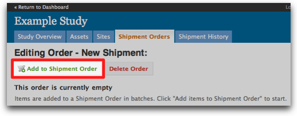
The system displays a list of available Sites for the current Study:
{kind=link}
[NOTE: you must select at least one Site to continue.]
Select the Sites you want to ship to, then click “Continue to Asset selection”:
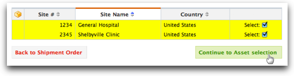
2.1Subsequent Batches
If you are adding additional batches to your Order, the system will highlight Sites that already have Assets selected:
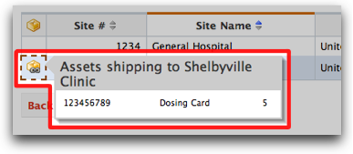
You can still select additional Assets to ship to these Sites.
3Selecting Assets
The Asset Selection screen displays Assets that can be shipped to the Sites you have selected:
{kind=link}
3.1Info Rollovers
If at any point you wish to double-check the Sites you have selected for this batch, a list of current selections is available on the right side of the screen. Hovering your mouse pointer over any Site’s name will display additional information for that Site:
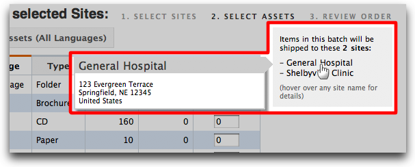
Additional information for each Asset is available on the left side of the Asset Selection screen. Hovering your mouse pointer over any preview icon will display a thumbnail and additional information for that Asset:
{kind=link}
3.2Language Filter
By default, the system only displays Assets that match the language(s) for the Sites you have selected. You can disable the language filter by clicking the “Show All Assets (All Languages)” toggle:
{kind=link}
Clicking “Show Assets Filtered by Site Language” will turn the filter back on.
3.3Entering quantities
Type a number in the “Qty per Site” field. Notice how the system automatically calculates the total quantity based on how many Sites are in the current batch:
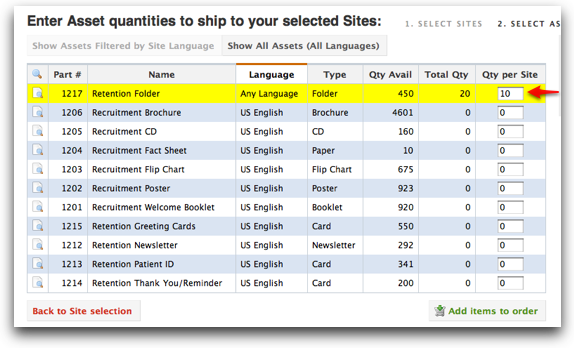
When you enter a quantity for an Asset, its row will automatically highlight, making it easy to see what you’ve already selected.
3.3.1Ordering by Pack
Some Assets are pre-shrinkwrapped and can easily be ordered by Pack. If an Asset is available in Packs, you will see an “Order by Pack” pop-up when you click in, or tab to, the Asset’s “Qty per Site” field:
{kind=link}
To order by Pack, simply enter the number of Packs you want shipped to each Site in the popup. The system will automatically calculate the total number of pieces for you:
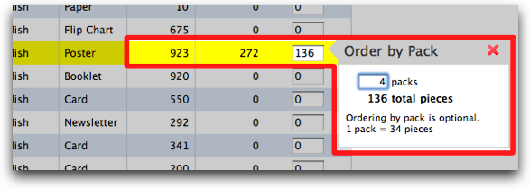
You are not required to order Assets in Packs. You can always enter a quantity directly into the “Qty to Ship” field.
3.3.2Inventory Warnings
The system will automatically display a warning icon when your batch contains a total quantity request that is greater than available inventory:
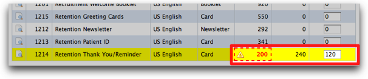
This is just a warning – you can still continue to build your Order. The system will check available inventory again when you submit your Order.
3.4Finishing a Batch
When you are done entering Asset quantities, click the “Add items to Order” button to continue:
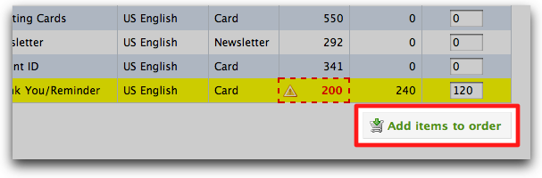
The Sites & Assets you selected are added to your Order, and you are returned to the Order Editing screen. You can now submit your order, or continue to add additional items.
4Reviewing an Order
Once you have added a batch of items, your Order will be displayed, grouped alphabetically by Site:
{kind=link}
You can click the “Group by Asset” toggle to switch the view:
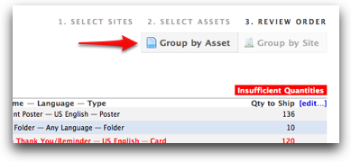
…to be grouped by Asset instead:
{kind=link}
4.1Inventory Troubleshooting
When viewing an in-progress Shipment Order, the system will automatically flag Assets with insufficient inventory:
If you are viewing your Order grouped by Asset, you can click the warning message:
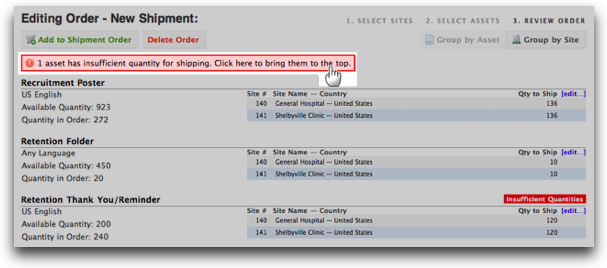
… to bring all Assets with insufficient inventory to the top of your screen:
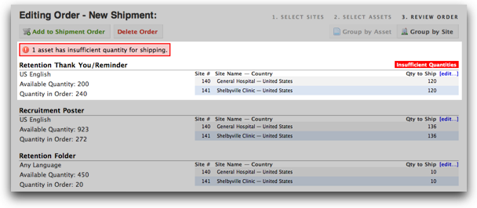
You can edit your requested quantities in either Asset or Site view
4.2Editing Quantities
To edit the quantities for a Site or Asset, click the “edit…” link next to the “Qty to Ship” column:
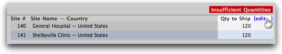
4.2.1By Asset
Editing quantities by Asset displays the current Sites & quantities in your Order. Note the insufficient inventory warning:
{kind=link}
By reducing your requested quantity to less than or equal to available inventory, the warning automatically disappears:
{kind=link}
Enter any adjustments in the “Qty to Ship” column and click the “Save Changes” button to update your Shipping Order.
4.2.2By Site
Editing quantities by Site displays all the Assets matching the Site’s language, and their currently-requested quantities:
{kind=link}
Assets with insufficient inventory are highlighted in red.
Enter any adjustments in the “Qty to Ship” column and click the “Save Changes” button to update your Shipping Order.
4.3Changing Ship Method
To change the Ship Method for a Site, first make sure the “Group by Site” toggle is selected. Then choose a Ship Method from the menu labeled “Ship via:”
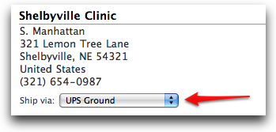
5Submitting an Order
Once you are satisfied with your Order, click the “Submit Order” button:
{kind=link}
If the system doesn’t detect any problems with your order, you will be presented with a final confirmation dialog:
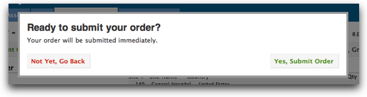
Click “Yes, Submit Order” to send your Order to Merlin. Otherwise, click the “Not Yet, Go Back” button and you will return to the Order Editing screen.
Once your Order is successfully submitted, a read-only view of your Order is displayed:
{kind=link}
5.1Partial Orders
If you click the “Submit Order” button while insufficient inventory warnings are still displayed, a “Confirm Partial Order” dialog is shown:
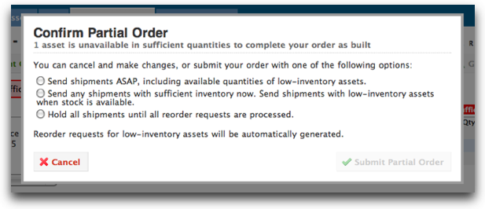
You can click the “Cancel” button to return to your Order and adjust quantities, or choose from three options for submitting a Partial Order:
- “Send shipments as soon as possible, including available quantities of low-inventory assets.”
This option tells Merlin to ship available inventory now, even if a Site may not receive its requested quantities.
- “Send any shipments with sufficient inventory now. Send shipments with low-inventory assets when stock is available”
This option tells Merlin to ship only if it will completely fulfill a Site’s requested quantities.
- “Hold all shipments until all reorder requests are processed”
This option tells Merlin not to ship anything until sufficient inventory is available to fulfill the entire Order.
With each option, a reorder request is automatically generated and sent to the appropriate parties.